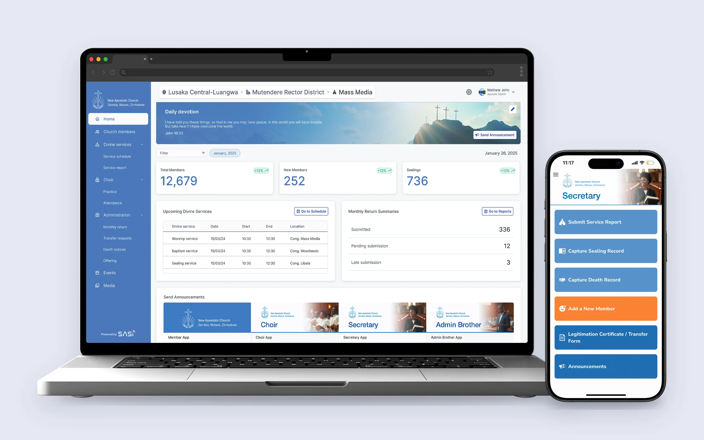
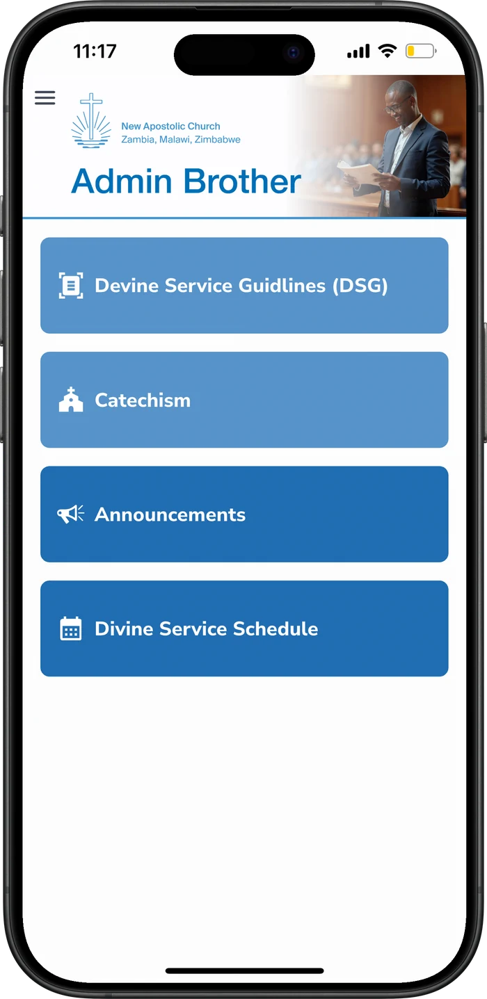
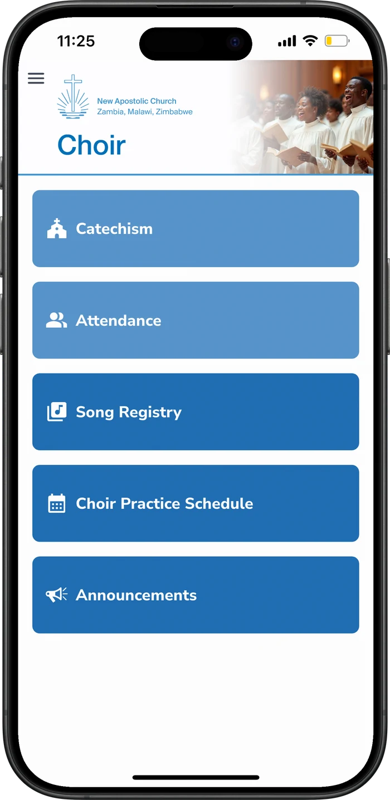
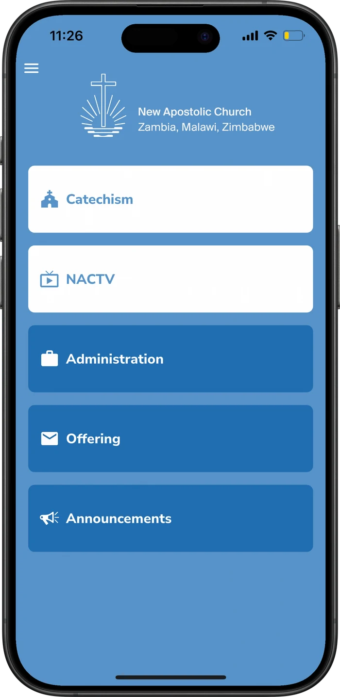

The right view for every role
The New Apostolic Church counts about 1.6 million members across Zambia, Malawi and Zimbabwe, organised as Apostles, Districts and Congregations. I designed the platform that runs their administration, and an invite system that gives every person exactly the access their role covers, and nothing more.

- Client
- New Apostolic Church
- Location
- Zambia, Malawi, Zimbabwe
- My role
- Product designer
- Timeline
- 2025
- Platform
- Web admin, SASI role apps
- Tools
- Figma
A worldwide church, run locally
The New Apostolic Church is one of the largest churches in Africa. Its District Apostle area for Zambia, Malawi and Zimbabwe is run as a chain of Apostle areas, districts and congregations, and its administration needed one home that respects that chain.
Sources: nak.org facts and figures (as of 31 Dec 2025) and nac.today (Nov 2025).
One hierarchy, four kinds of user
Each level oversees the ones below it. Tap a role to see what it should be able to see.
Everyone in one system, nobody sees everything
- Records had no single home. Service reports, sealings, deaths, transfers and monthly returns needed to flow from congregations up to districts.
- Sensitive by default. Member records, offerings and personal details can’t be visible to everyone who logs in.
- Access follows the hierarchy. An Apostle oversees districts, a rector oversees congregations, and a secretary handles one congregation.
- Self sign-up breaks it. If people register and request access, someone has to untangle who should see what, forever.
How might we give every person exactly the view their role covers, across three countries, without asking admins to manage permissions all day?
Mapping who does what, before any screen
Before drawing screens, I listed what each role actually does in a week, then checked how other church platforms handle access.
What each role needs, and nothing more
| What matters | Admin Brother | Secretary | Choir | Member |
|---|---|---|---|---|
| Divine service schedule | ||||
| Submit service report | ||||
| Add a new member | ||||
| Choir attendance and practice | ||||
| Offering | ||||
| Announcements |
Mapped from the four role apps. Each role sees only its own tools.
How other church platforms handle access
| What matters | Planning Center | Breeze | ChurchSuite | Ours |
|---|---|---|---|---|
| Nested hierarchy: Apostle, District, Congregation | ||||
| Access scoped to your part by default | ||||
| Role set before first sign-in | ||||
| Scope set before first sign-in | ||||
| Simple, predictable permission rules |
- Churches are modelled flat. Mainstream tools model one church with campuses. None documents a nested Apostle, District, Congregation scope.
- Scope is opt-in. Locations restrict nothing until someone configures lockdowns, and campuses often work as filters, not boundaries.
- Only one tool requires scope at invite. ChurchSuite asks for permitted sites when you create a user. That’s the pattern we built on.
- Even vendors get permissions wrong. Conflicting rules contradict each other in one vendor’s own help pages.
Who we designed for
Two proto-personas, drawn from the church’s structure and the roles above.
“I need my district, all of it, and only my district.”
- See every congregation in his district
- Spot late monthly returns early
- Invite secretaries without calling IT
- Returns that arrive late or incomplete
- Not knowing who can see member data
- Chasing returns one by one
“Give me my congregation and the forms I fill in every week.”
- Capture records the day they happen
- Submit the service report from her phone
- Never wade through other congregations
- Long forms and unclear fields
- Shared logins
- Re-typing the same member details
Access that follows the church’s own shape
A scope bar that mirrors the church
The top of every screen reads like an address: Lusaka Central-Luangwa › Mutendere Rector District › Mass Media. Switching scope is one click, and the list only contains places you’re allowed to see.
Invite, don’t sign up
Access starts with an invite. The admin picks a role, then a level, then a place, and the dropdowns only offer places inside their own scope. The person signs in to a platform that already fits them.
- Role and scope are decided before the first sign-in, so there’s nothing to clean up later.
- Cascading menus: pick District and only districts appear; pick Congregation and only congregations under you appear.
Roles in plain language
Admins define roles like “District Secretary” with a simple grid: view, create, edit and delete for each module. A role says what you can do; your invite says where you can do it.
- Role = what you can do. Scope = where you can do it. Keeping them separate kept the rules predictable.
- The same role works in any congregation, so admins create a handful of roles, not hundreds.
Phones feed the platform
The church’s people mostly work from their phones. The role apps, built on the SASI Admin platform, capture services, members and returns, and everything lands in the admin platform within the right scope.



One platform, many views
One design system across the whole platform, built component by component in Figma.
Writing the rules down before building them
Access rules are easy to get wrong, so I answered the hard questions in plain words first.
| Question | How the design answers it |
|---|---|
| What happens when a leader moves? | Scope belongs to the invite, not the person, so moving someone is one edit. |
| What if someone holds two roles? | Roles stack, and scope stays explicit for each one. |
| How do we protect member data? | Profiles open in a side panel within scope; nothing is listed outside it. |
| Where does the weekly work happen? | Role apps for the weekly tasks; the web platform for oversight. |
What I handed to engineering
Nobody sees more than their role
These are the targets we set for the rollout across the three countries.
Access is a design problem
Next
- Bulk invites for a whole congregation.
- An audit log of who granted what, and when.
- Offline capture for rural congregations.